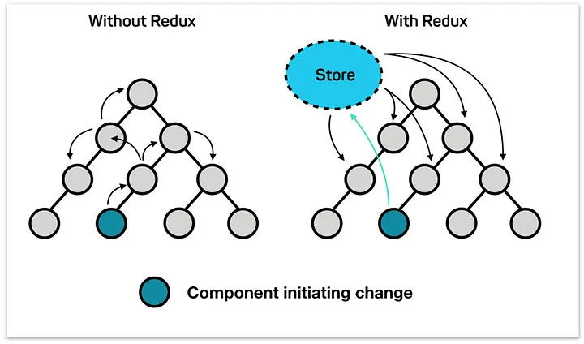

Hướng dẫn chi tiết các thành phần trong Redux Toolkit
Redux Toolkit là thư viện chính thức giúp đơn giản hóa Redux, giảm boilerplate code và tích hợp các best practices. Dưới đây là mô tả chi tiết về từng thành phần.
1. Store - configureStore
configureStore là hàm chính để tạo Redux store. Nó đơn giản hóa việc thiết lập store bằng cách tích hợp sẵn các middleware (như redux-thunk), hỗ trợ Redux DevTools, và cho phép cấu hình reducer dễ dàng.
Các tính năng chính:
- Tự động thêm middleware mặc định để xử lý logic bất đồng bộ.
- Hỗ trợ Redux DevTools để debug dễ dàng.
- Cho phép kết hợp nhiều reducer thành một root reducer.
store.js.
import { configureStore } from '@reduxjs/toolkit';
import counterReducer from './counterSlice';
const store = configureStore({
reducer: {
counter: counterReducer,
},
});
export default store;
Sơ đồ minh họa quy trình dữ liệu trong Redux:

Khi có store, ứng dụng không cần truyền dữ liệu từ cha vào con, mọi component đề lấy data từ store ra:
2. State
State là dữ liệu của ứng dụng tại một thời điểm cụ thể. Có thể hiểu nó là tập hợp các giá trị của một coponent tại một thời điểm.
interface DocumentNumberState {
documentNumber: string;
}
const currentYear = new Date().getFullYear().toString().slice(-2);
const initialState: DocumentNumberState = {
documentNumber: `TB-PNK-${currentYear}0001`,
};
Ví dụ:
Để dễ hiểu thì chúng ta cứ xem state là các giá trị hiển thị trên giao diện. Redux lưu trữ state trong store để dễ quản lý và truy cập.
3. Action
Khái niệm: Redux action là một đối tượng js đơn giản, gồm có type và payload. Type là một string, bắt buộc phải có. Payload là một object, không có cũng được.
const Actions = {
type: '',
payload: ''
}
createAction là hàm tạo action creators độc lập mà không cần gắn với reducer. Nó hữu ích khi bạn chỉ cần định nghĩa một hành động đơn giản hoặc khi làm việc với các hệ thống Redux khác.
Các tính năng chính:
- Tạo action creators với type được định nghĩa sẵn.
- Hỗ trợ truyền payload vào action.
- Thích hợp khi không cần logic reducer phức tạp.
import { createAction } from '@reduxjs/toolkit';
export const resetApp = createAction('app/reset');
export const setTheme = createAction('app/setTheme');
// Sử dụng trong component
dispatch(setTheme('dark'));
4. Reducer
createReducer là hàm tạo reducer theo cách thủ công hơn so với createSlice. Nó hỗ trợ hai cú pháp: "map object" (ánh xạ action type với hàm xử lý) và "builder callback" (dùng để xử lý logic phức tạp hơn).
Các tính năng chính:
- Hỗ trợ Immer để viết reducer dễ dàng.
- Linh hoạt hơn
createSlicekhi cần xử lý logic reducer riêng lẻ. - Thích hợp cho các trường hợp không cần tạo action creators tự động.
import { createReducer } from '@reduxjs/toolkit';
const initialState = { count: 0 };
const counterReducer = createReducer(initialState, {
'counter/increment': (state) => {
state.count += 1;
},
'counter/decrement': (state) => {
state.count -= 1;
},
});
export default counterReducer;
5. Slice - createSlice
Slice là kết hợp giữa state, actions và reducers. createSlice là công cụ mạnh mẽ để tạo reducer và action creators đồng thời. Nó giảm thiểu boilerplate code bằng cách tự động sinh ra action types và action creators dựa trên các reducer được định nghĩa.
Các tính năng chính:
- Hỗ trợ Immer, cho phép viết logic reducer theo kiểu "mutable" nhưng vẫn đảm bảo bất biến.
- Tự động tạo action creators và action types.
- Gộp reducer và action vào một "slice" duy nhất, dễ quản lý.
import { createSlice } from '@reduxjs/toolkit';
const counterSlice = createSlice({
name: 'counter',
initialState: { value: 0 },
reducers: {
increment(state) {
state.value += 1;
},
decrement(state) {
state.value -= 1;
},
incrementByAmount(state, action) {
state.value += action.payload;
},
},
});
export const { increment, decrement, incrementByAmount } = counterSlice.actions;
export default counterSlice.reducer;
6. createAsyncThunk
createAsyncThunk là hàm dùng để xử lý các tác vụ bất đồng bộ, như gọi API. Nó tự động sinh ra các action tương ứng với ba trạng thái: pending, fulfilled, và rejected.
Các tính năng chính:
- Tự động quản lý trạng thái của request (đang tải, thành công, lỗi).
- Cho phép truyền tham số vào hàm bất đồng bộ.
- Tích hợp dễ dàng với
createSliceđể xử lý kết quả.
import { createAsyncThunk, createSlice } from '@reduxjs/toolkit';
export const fetchUser = createAsyncThunk('user/fetch', async (userId, { rejectWithValue }) => {
try {
const response = await fetch(`/api/user/${userId}`);
if (!response.ok) throw new Error('Failed to fetch');
return await response.json();
} catch (error) {
return rejectWithValue(error.message);
}
});
const userSlice = createSlice({
name: 'user',
initialState: { user: null, status: 'idle', error: null },
extraReducers: (builder) => {
builder
.addCase(fetchUser.pending, (state) => {
state.status = 'loading';
})
.addCase(fetchUser.fulfilled, (state, action) => {
state.status = 'succeeded';
state.user = action.payload;
})
.addCase(fetchUser.rejected, (state, action) => {
state.status = 'failed';
state.error = action.payload;
});
},
});
export default userSlice.reducer;
6. createSelector
createSelector là hàm từ thư viện Reselect, được tích hợp trong Redux Toolkit. Nó tạo các selector có khả năng memoization, giúp tối ưu hiệu suất bằng cách chỉ tính toán lại khi input thay đổi.
Các tính năng chính:
- Ngăn tính toán lại dữ liệu không cần thiết.
- Cho phép kết hợp nhiều selector để tạo selector phức tạp.
- Tích hợp tốt với React-Redux để tối ưu render.
import { createSelector } from '@reduxjs/toolkit';
const selectTodos = state => state.todos;
const selectFilter = state => state.filter;
const selectFilteredTodos = createSelector(
[selectTodos, selectFilter],
(todos, filter) => todos.filter(todo => todo.status === filter)
);
export default selectFilteredTodos;
7. Middleware
Redux Toolkit tích hợp sẵn middleware như redux-thunk để xử lý logic bất đồng bộ. Ngoài ra, bạn có thể thêm các middleware tùy chỉnh thông qua configureStore.
Các tính năng chính:
redux-thunkcho phép viết các action creators trả về hàm thay vì object.- Hỗ trợ middleware tùy chỉnh để xử lý logging, analytics, hoặc các tác vụ phức tạp.
- Tích hợp dễ dàng với các thư viện như
redux-sagahoặcredux-observable.
import { configureStore } from '@reduxjs/toolkit';
const logger = store => next => action => {
console.log('Dispatching:', action);
return next(action);
};
const store = configureStore({
reducer: {},
middleware: (getDefaultMiddleware) => getDefaultMiddleware().concat(logger),
});
export default store;
Sơ đồ minh họa quy trình dữ liệu trong Redux khi có Middleware:

8. RTK Query
RTK Query là công cụ mạnh mẽ trong Redux Toolkit để quản lý dữ liệu từ API. Nó cung cấp các tính năng như tự động caching, refetching, và quản lý trạng thái request, giúp giảm thiểu code thủ công.
Các tính năng chính:
- Tự động tạo hooks (như
useQuery,useMutation) để sử dụng trong React. - Hỗ trợ caching và invalidation để tối ưu hiệu suất.
- Quản lý trạng thái loading, error, và data một cách dễ dàng.
import { createApi, fetchBaseQuery } from '@reduxjs/toolkit/query/react';
export const postApi = createApi({
reducerPath: 'postApi',
baseQuery: fetchBaseQuery({ baseUrl: '/api' }),
endpoints: (builder) => ({
getPosts: builder.query({
query: () => 'posts',
}),
addPost: builder.mutation({
query: (newPost) => ({
url: 'posts',
method: 'POST',
body: newPost,
}),
}),
}),
});
export const { useGetPostsQuery, useAddPostMutation } = postApi;
9. Cấu trúc cây thư mục trong dự án Next.js 15 (App Router và TypeScript)
Khi tích hợp Redux Toolkit vào dự án Next.js 15 sử dụng App Router và TypeScript, cấu trúc thư mục cần được tổ chức theo cách tối ưu để dễ bảo trì và mở rộng. Dưới đây là cấu trúc đề xuất:
project-root/
├── app/
│ ├── layout.tsx # Root layout với Redux Provider
│ ├── page.tsx # Trang chính
│ ├── globals.css # CSS toàn cục
│ ├── (features)/ # Nhóm tính năng
│ │ ├── counter/ # Tính năng bộ đếm
│ │ │ ├── page.tsx # Trang hiển thị bộ đếm
│ │ │ ├── Counter.tsx # Component bộ đếm
│ │ ├── todos/ # Tính năng todo
│ │ │ ├── page.tsx # Trang hiển thị todo
│ │ │ ├── TodoList.tsx # Component danh sách todo
│ │ │ ├── AddTodo.tsx # Component thêm todo
├── lib/
│ ├── redux/ # Quản lý Redux Toolkit
│ │ ├── store.ts # Cấu hình store
│ │ ├── hooks.ts # Custom hooks (useAppDispatch, useAppSelector)
│ │ ├── slices/ # Các slice
│ │ │ ├── counterSlice.ts # Slice bộ đếm
│ │ │ ├── todoSlice.ts # Slice todo
│ │ ├── services/ # RTK Query APIs
│ │ │ ├── api.ts # Cấu hình API
│ │ ├── types/ # TypeScript types
│ │ │ ├── index.ts # RootState, AppDispatch
├── public/ # Tài nguyên tĩnh
├── components/ # Component dùng chung
│ ├── Header.tsx # Header
│ ├── Footer.tsx # Footer
├── styles/ # CSS modules
│ ├── counter.module.css # CSS cho counter
├── types/ # TypeScript types chung
│ ├── todo.ts # Type cho todo
├── utils/ # Hàm tiện ích
│ ├── api.ts # API utils
├── next.config.js # Cấu hình Next.js
├── tsconfig.json # Cấu hình TypeScript
├── package.json # Dependencies
Giải thích:
- app/layout.tsx: Đặt Redux Provider để store có thể dùng toàn cục.
- lib/redux/: Chứa toàn bộ logic Redux (store, slices, RTK Query).
- app/(features)/: Tổ chức các tính năng theo App Router, mỗi tính năng có page và component riêng.
- types/: Quản lý các type TypeScript để đảm bảo an toàn kiểu.
'use client';
import { Provider } from 'react-redux';
import { store } from '@/lib/redux/store';
import './globals.css';
export default function RootLayout({ children }: { children: React.ReactNode }) {
return (
<html lang="en">
<body>
<Provider store={store}>{children}</Provider>
</body>
</html>
);
}
Lợi ích của Redux Toolkit
Redux Toolkit mang lại nhiều lợi ích so với Redux truyền thống:
- Giảm boilerplate code: Các API như
createSlicevàcreateAsyncThunkgiúp viết code ngắn gọn hơn. - Tích hợp best practices: Sử dụng Immer, DevTools, và các cấu hình mặc định tối ưu.
- Dễ bảo trì: Tổ chức code theo "slice" giúp quản lý state dễ dàng hơn.
- Hiệu suất cao: Tích hợp
createSelectorvà RTK Query để tối ưu hiệu suất.
Nếu bạn cần giải thích chi tiết hơn hoặc ví dụ cụ thể, hãy liên hệ!